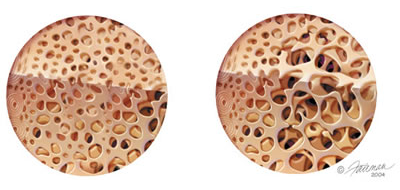

Tudo sobre a coluna vertebral.

Na imagem acima pode ver à esquerda a estrutura do osso normal e à direita do osso osteoporótico. A osteoporose faz parte do processo normal de envelhecimento e é mais comum em mulheres do que em homens. A doença progride lentamente e raramente apresenta sintomas. Se não forem feitos exames pode passar despercebida.
A partir de 1991 devido o Consenso realizado por todas as Sociedades Americanas que tratam da osteoporose, elas passaram a informar que é fundamental a análise da qualidade óssea que expressa o estado de deterioração do colágeno ósseo. Quanto melhor for a qualidade óssea menor a chance de ter fratura.
A mudança na definição ocorreu porque as pesquisas verificaram que 100% das pacientes com Síndrome de Turner e que possuiam osteoporose, não fraturam. Ainda, os pesquisadores constataram que ao prescrever Fluoreto de Sódio para suas pacientes, os óssos ficavam mais densos e fraturavam com maior facilidade.
A partir dessas constatações os pesquisadores começaram a estudar mais profundamente o tecido ósseo e verificaram que o risco de desenvolver osteoporose e fratura está diretamente relacionado com as deteriorações do colágeno ósseo. A partir de 2000, uma nova tecnologia com Inteligência Artificial dos Projetos da Robótica da Nasa permitiu determinar o local mais apropriado do organismo humano que permite estudar minuciosamente o tecido ósseo. Essa região é a das metáfises das falanges dos dedos II-V. Nela é possível avaliar oito parâmetros e não apenas um como quando o exame é realizado na coluna lombar, como vem sendo orientado a mais de 25 anos. Na atualidade, avaliar apenas a densidade óssea nós estamos fazendo uma análise do tecido ósseo muito restrita.
Coluna — Pessoas idosas podem fracturar as vértebras da coluna com frequência. A chamada corcunda de viúva é uma deformação comum e pode até levar à diminuição de tamanho do doente. É muito importante saber que a maioria das fracturas que ocorrem na coluna se situam na região torácica e não na região lombar como tem sido descrito pela maioria dos reumatologistas e ortopedistas. Vários pesquisadores americanos, entre eles Bonnick (1989) já tinham constatado esse fato. Após revisão dos trabalhos publicados nos últimos 15 anos, o Serviço Preventivo da Força Tarefa Americana a partir de 2002 passou a orientar a densitometria da coluna lombar apenas para as pacientes acima de 65 anos se não possuirem antecedente de fratura na família. Também informa que esse exame pode apresentar baixa reprodutibilidade (59,0%) em seus resultados quando são realizados anualmente. Por essa razão, recomendam que o exame não deve ser repetido na coluna lombar com intervalo menor do que 3 anos.